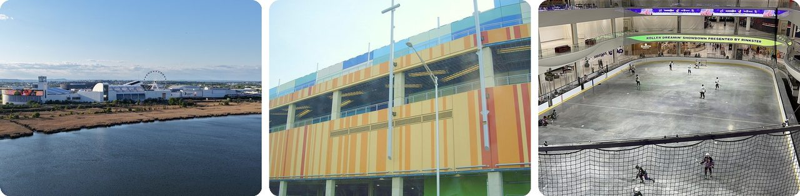
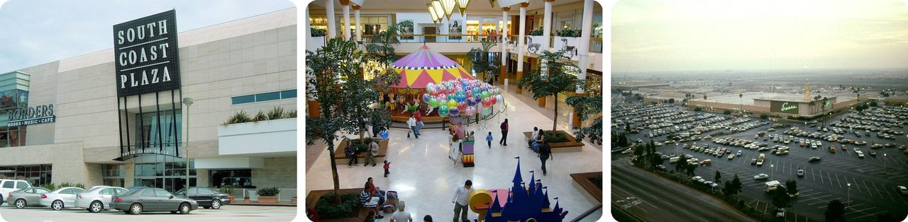
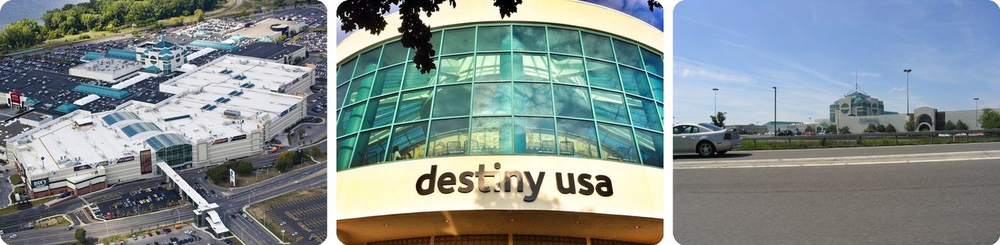
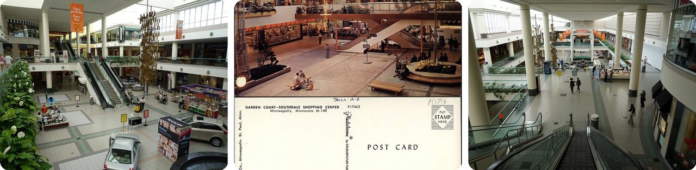
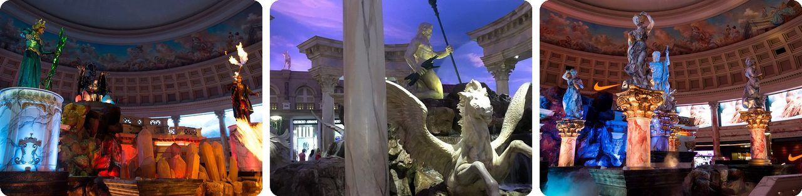

🌍 十大 美国购物中心，从最大到最小
2026年11月25日
1. 🥶 美国商城的走廊里没有暖气
 明尼苏达州布卢明顿的美国商城（Mall of America）是全美最大的购物中心，面积大约 570 万平方英尺。有家报纸说过，里面能装下七座扬基体育场。
明尼苏达州布卢明顿的美国商城（Mall of America）是全美最大的购物中心，面积大约 570 万平方英尺。有家报纸说过，里面能装下七座扬基体育场。
明尼苏达的冬天冷得要命，可商城的走道里却没有暖气。只有出入口和一些地下区域有供暖。阳光从天窗照进来，剩下的热量来自灯、各种电器，还有走来走去的人。
商城建在一座老棒球场的旧址上。室内游乐园的地板上有块牌子，标着当年本垒的位置。墙上高高的地方钉着一个红色球场座椅，那正是 1967 年哈蒙·基勒布鲁那记 520 英尺全垒打落下的地方，差不多有一个半橄榄球场那么远。
说白了，逛街的人就是暖气片。
2. 🎢 新泽西的美国梦商城花了 15 年才开张

新泽西州东卢瑟福的美国梦商城（American Dream）是全美第二大购物中心，面积大约 300 万平方英尺。它 2004 年动工，直到 2019 年才终于开门。这中间，它换了好几任老板，工程停了又开，开了又停。盖到一半的大楼被刷成了很扎眼的颜色，从高速公路上都看得到。2011 年，新泽西州州长克里斯·克里斯蒂说它“辣眼睛”，还说它是新泽西最丑的建筑，“说不定也是全美国最丑的”。2019 年，它终于被刷成了白色。
那年早些时候，2011 年 2 月，当地下了破纪录的一个月大雪。工人们想把商城室内滑雪场屋顶上的雪化掉，结果积冰让一部分墙塌了。室外的雪，弄坏了专门造室内雪的大楼。
换句话说，美国最慢开张的商城，运气也最差。
3. 🫘 加州最大的商城长在一块利马豆田里

科斯塔梅萨的南海岸广场（South Coast Plaza）是加州最大的购物中心。塞格斯特罗姆家族把它建在自家的一块利马豆田里，就在发展飞快的橘郡，1967 年开业。和大多数大商城不一样，它从来没卖给大投资公司。到现在还是同一个家族在管。
它还特别能卖。店铺一年的收入大约 25 亿美元，差不多每天 700 万美元，是全美赚钱最多的购物中心。
说到底，豆子田变成了钱田。
4. 🛝 佛罗里达最大的商城有一座算作艺术品的滑梯
 迈阿密附近的阿文图拉商城（Aventura Mall）是佛罗里达最大的商城，也是全美第五大。整个商城里摆着 25 件以上的大型艺术品。
迈阿密附近的阿文图拉商城（Aventura Mall）是佛罗里达最大的商城，也是全美第五大。整个商城里摆着 25 件以上的大型艺术品。
最有名的是阿文图拉滑梯塔，艺术家卡斯滕·霍勒做的一座 93 英尺高的螺旋滑梯，差不多有 9 层楼那么高。这是一件可以玩的艺术品。
商城里还有一个当作艺术品建的游乐场，和一家三层楼的苹果店。《今日美国》的读者在 2025 年和 2026 年都把它评为全美最佳商城。
你可以把它想成一座能从雕塑上滑下来的博物馆。
5. 🎠 纽约州最大的商城建在一个废品场上

锡拉丘兹的命运美国商城（Destiny USA）是纽约州最大的购物中心。建它之前，那块地是个叫马利废品场的垃圾场，周围是一片片储油罐，人们管那里叫“石油城”。脏地得先清理干净，所以工程拖了很久。1990 年开业时，它叫“旋转木马中心”，名字来自一座 1908 年的真旋转木马，现在还在商城里转着。
后来，老板把它改名叫命运美国，越扩越大。到 2021 年，每年来逛的人超过 2,600 万。
所以说，一堆废铁变成了全美最热闹的商城之一。
6. 🌡️ 第一个全封闭商城是为了对付明尼苏达的冷天

明尼苏达州伊代纳的南谷中心（Southdale Center）在 1956 年开业。它是美国第一个全封闭、有空调控温的购物中心。屋顶和空调系统让里面一年到头都保持 75°F，就算外面暴风雪，里面也像春天。设计它的建筑师维克多·格鲁恩是在维也纳长大的，他想造一个让人喝咖啡、聊天的城镇广场。他甚至想象，将来这里会有学校、医疗中心和住家。
不是每个人都喜欢它。大名鼎鼎的建筑师弗兰克·劳埃德·赖特来看过后说，格鲁恩“应该让市中心留在市中心”。
换个说法，第一个室内商城一出生就收到了差评。
7. 🛶 拉斯维加斯有个商城，二楼能坐贡多拉
 大运河购物中心（Grand Canal Shoppes）在拉斯维加斯的威尼斯人度假村里。整个商城都在二楼，楼下就是赌场。
大运河购物中心（Grand Canal Shoppes）在拉斯维加斯的威尼斯人度假村里。整个商城都在二楼，楼下就是赌场。
可它居然有一条运河。贡多拉，也就是意大利威尼斯那种长长的小船，载着客人从商店前面划过。天花板画得像天空，主广场照着威尼斯的圣马可广场造。
它 1999 年开业，可开张第一天，72 家店铺和餐厅里只有 16 家准备好了。
你可以把它想成一趟不用出门的坐船游。
8. 🗿 拉斯维加斯商城里，机器人罗马神在演戏

拉斯维加斯凯撒宫的论坛购物中心（Forum Shops）建在一块以前的赛车场上。1992 年开业时，它每小时都有一场免费表演：会说话的罗马神机器人雕像，比如酒神巴克斯和维纳斯，站在一座花了 400 万美元的喷泉里。到 2011 年这场表演结束时，机器人经常出故障，有些人也听不懂它们在说什么。
另一场机器人表演是 1997 年加的，2013 年翻新过。在“亚特兰蒂斯陷落”里，一位国王的孩子们争着要控制亚特兰蒂斯城，最后城沉了，还有真的火和水。旁边有一个装着 500 条热带鱼的 5 万加仑大鱼缸，下面还有一个工作间，技术员在里面让机器人保持运转。
一个雕像会回嘴的商城。
9. 🏛️ 美国第一个室内商城，现在住着人
 罗德岛州普罗维登斯的威斯敏斯特拱廊（Westminster Arcade）在 1828 年开业，差不多 200 年前了。它被称为美国第一个封闭式购物中心：三层小店，上面盖着一条长长的天窗。
罗德岛州普罗维登斯的威斯敏斯特拱廊（Westminster Arcade）在 1828 年开业，差不多 200 年前了。它被称为美国第一个封闭式购物中心：三层小店，上面盖着一条长长的天窗。
一开始，来逛的人很少，因为它离别的商店太远了。人们给它起外号叫“巴特勒的蠢事”，巴特勒就是建它的赛勒斯·巴特勒。后来隔壁开了一家时髦的帽子店，把有钱的顾客吸引了过来，情况才变了。
它正面的柱子有 45 英尺高，是用牛群拉着，在土路上走了 8 英里运过来的。从 2013 年起，这里一部分是商店，一部分是“微型阁楼”，也就是很小很小的公寓。
美国最老的商城，变成了住人的地方。
10. ⛽ 洛杉矶的小小迷你商城，长在倒闭的加油站上
 最小的商城是条形商城：一排短短的商店，门口是停车场。最小的大约 5,000 平方英尺起，差不多一个篮球场那么大。全美有 6 万 8 千多个。
最小的商城是条形商城：一排短短的商店，门口是停车场。最小的大约 5,000 平方英尺起，差不多一个篮球场那么大。全美有 6 万 8 千多个。
在洛杉矶，人们叫它迷你商城。1973 年，一场石油危机让很多加油站倒闭，城里到处空出了街角的地。开发商就在上面盖了几家店，再加一个小停车场。
那年，第一个现代的迷你商城在全景城开张，后来又冒出了 600 多个。多到 1988 年，洛杉矶专门定了一条规定来限制它们。
一整个商城，就塞在以前一个加油泵的位置上。
趣闻
在建美国商城之前，开发商最早给这块地想的是一个超大的室内湖，有 6 英尺高的浪可以在室内冲浪，还有潜水艇带游客看海洋生物。这个计划后来取消了。几十年后，同一家公司给美国梦商城的水上乐园设计了一个要成为世界最大的室内造浪池，大约 1.5 英亩，装 150 万加仑水。假海洋、人造浪和世界各地的室内海滩，是下一个值得探索的大世界。
图片来源（Wikimedia Commons）
- #1: Mall of America Nickelodeon Universe Second Floor Wide.jpg by AdaLovelaceHackermode, CC0
- #1: MOA Killebrew chair1.JPG by Wahkeenah at English Wikipedia, Public domain
- #1: Mall of America Floors & Escalators.jpg by Tyler Vigen, CC BY 4.0
- #2: American Dream Mall, Drone Aerial at NJ-3 (May 2026).jpg by MiracleMiles, CC BY 4.0
- #2: Meadowlands Xanadu Exterior (flickr) by LancerE, CC BY 2.0
- #2: The Rink in the American Dream Meadowlands during ice hockey practicing.jpg by ArielR20130725, CC0
- #3: South Coast Plaza entrance.jpg by Coolcaesar at English Wikipedia, CC BY-SA 3.0
- #3: Southcoastplaza-int.jpg by Arnold C, Attribution
- #3: South Coast Plaza, Costa Mesa, 1980s (flickr) by Orange County Archives, CC BY 2.0
- #4: New Slide Sculpture Aventura Mall (flickr) by Phillip Pessar, CC BY 2.0
- #4: Aventura Mall exterior 2020.jpg by Chris6d, CC BY-SA 4.0
- #4: Christmas Aventura Mall - 23 December 2023 - 8.jpg by Phillip Pessar, CC BY 2.0
- #5: Destiny USA.png by US Embassy Canada, CC BY 2.0
- #5: Destiny of the USA (14647939567).jpg by Michael Scialdone, CC BY 2.0
- #5: Carouselmallsyr.jpg by Joegrimes at English Wikipedia, Public domain
- #6: 2009-0611-003-Southdale.jpg by Bobak Ha'Eri, CC BY 3.0
- #6: Garden Court, Southdale Shopping Center - DPLA - 7efdd551273e827e867985d63d37d009.jpg by Colourpicture Publishers, Inc. (Boston, Mass.), Public domain
- #6: 2009-0611-004-Southdale.jpg by Bobak Ha'Eri, CC BY 3.0
- #7: Las Vegas - The Venetian - Grand Canal Shoppes - Gondolas (flickr) by jared422_80, CC BY 2.0
- #7: Grand Canal Shoppes in Las Vegas.jpg by David Shane, CC BY 2.0
- #7: St. Mark's Square at the Grand Canal Shoppes.jpg by Paulgokin, CC BY-SA 3.0
- #8: Fall of Atlantis (3).jpg by Tristan Surtel, CC BY-SA 4.0
- #8: Las Vegas - The Forum Shops at Caesars - Fall of Atlantis Statue (flickr) by jared422_80, CC BY 2.0
- #8: Interior of The Forum Shops (Las Vegas).jpg by Tristan Surtel, CC BY-SA 4.0
- #9: Westminster Arcade (62464).jpg by Rhododendrites, CC BY-SA 4.0
- #9: Westminster Arcade - 1828.jpg by Timothy Burling, CC BY 2.0
- #9: Westminster Arcade in Providence Rhode Island in 1850.jpg by Artist not credited., Public domain
- #10: Mini-mall, Los Angeles, California.jpg by Downtowngal, CC BY-SA 3.0
- #10: Cosmos Village.jpg by Downtowngal, CC BY-SA 3.0
- #10: Multi-Cultural Corner Mini-mall (flickr) by feculent_fugue, CC BY 2.0


.jpg){kind=link}


.jpg){kind=link}


.jpg){kind=link}
.jpg){kind=link}
.jpg){kind=link}